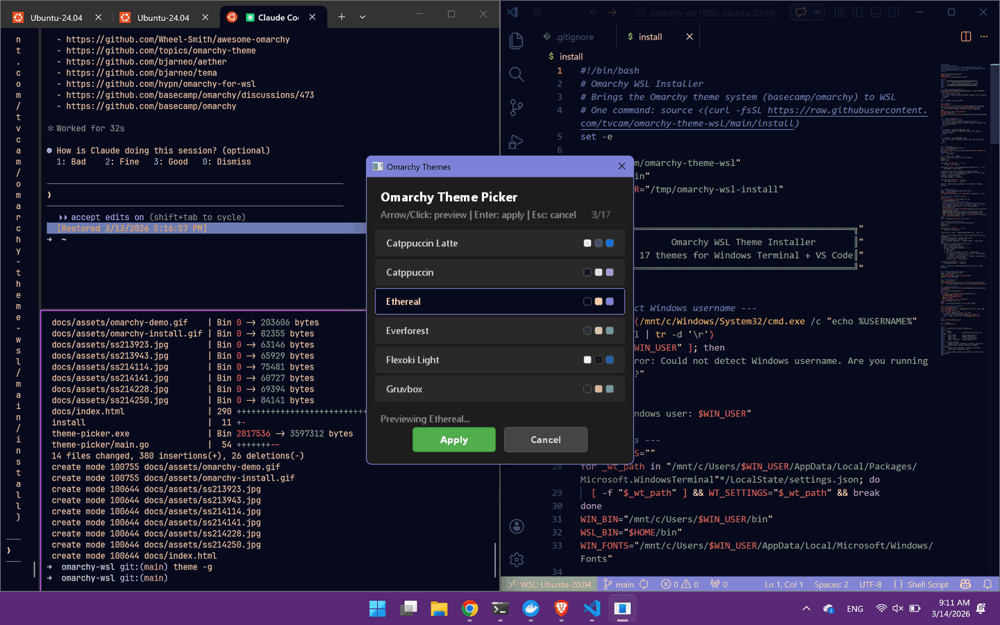

17 curated themes that switch Windows Terminal, VS Code, dark/light mode, accent color, and wallpaper — all at once.

Color scheme applied to all WSL profiles instantly.
Color theme switched automatically. Extensions installed on first use.
Windows dark/light mode switches with the theme.
Title bar and system accent color matched to each theme.
Curated wallpapers from Omarchy, one per theme.
Zero-dependency Windows exe built with Go + Win32. Live preview as you scroll.